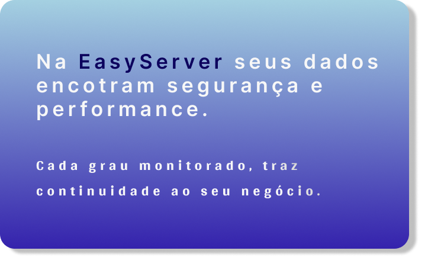
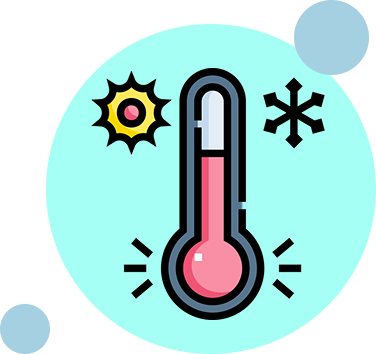
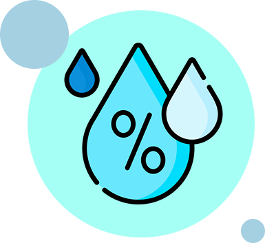
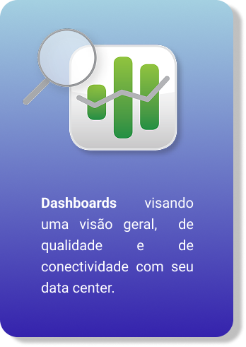
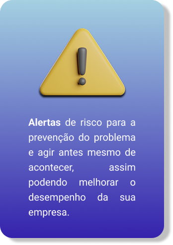

FAZEMOS O MELHOR MONITORAMENTO PARA MELHORAR O SEU NEGÓCIO
Trazemos um monitoramento para seus servidores, detectamos para agir antes que o problema tome conta.
INICIAR ANÁLISE
Trazemos um monitoramento para seus servidores, detectamos para agir antes que o problema tome conta.
INICIAR ANÁLISE
O EasyServer é uma plataforma de monitoramento de servidores que permite acompanhar, em tempo real, dados como temperatura e umidade dos racks. Seu objetivo é ajudar a prevenir falhas e proteger os equipamentos, oferecendo uma solução simples, prática e confiável para garantir mais segurança e estabilidade na infraestrutura.
SAIBA MAIS


